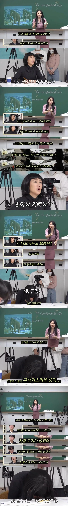
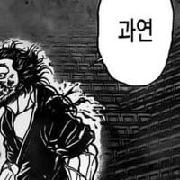

")

오 입이 줄었어가 아니라고?!
그건 신석기정도 될듯
그건 근대 일본
구석기에는 사냥하다가 동료 죽으면 그냥 고기로 먹었나..?
아무리 원시시대지만 그정도인가
굳이 원시시대가 아니더라도 자기 자식 중 골라서 먹는 사례는 꽤 있지
구석기는 농경사회 이전이기도 하고 저장할 식량이랄 게 없으니 이상할 건 없다고 봄
그 시절 도구로 사냥한다는 게 목숨 거는 일이기도 하고
빙하기 시절이라 식량은 더 구하기 힘들었을 거 같음
좋아요 기뻐요 ㅋㅋ
구석기 정도 됐으면 동료 죽었을 때 슬퍼했을 거 같은데?
얼마나 극한의 환경이냐 차이일듯 ㅋㅋㅋ
아냐 구석기땐 저 마인드가 맞았을거야. 신석기때면 몰라도.
암만그래도 코끼리도 동료의 죽음에 슬퍼하는데... 아 그때는 코끼리도 안 슬퍼했을라나
ㅋㅋㅋㅋㅋ
지금은 그런생각하면 그냥 싸이코패쓰 아냐?
ㅋㅋㅋㅋㅋㅋㅋㅋㅋㅋㅋㅋㅋㅋㅋㅋㅋㅋㅋㅋ
피클 ㄷㄷ
기존쎄 모델 한혜진도 꼼짝못하는 구석기녀 ㅋㅋ